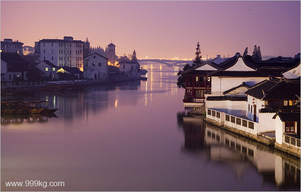
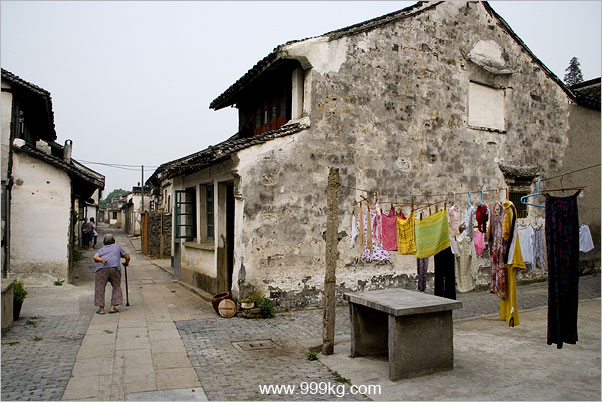
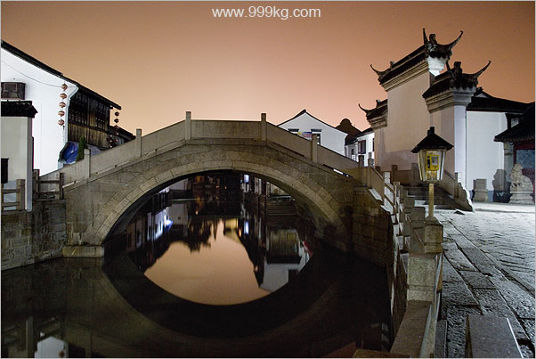
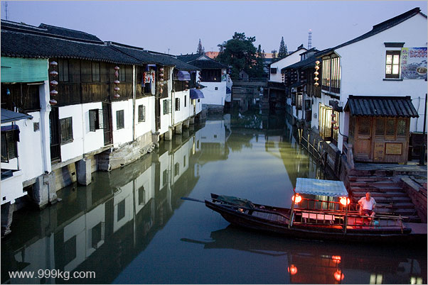
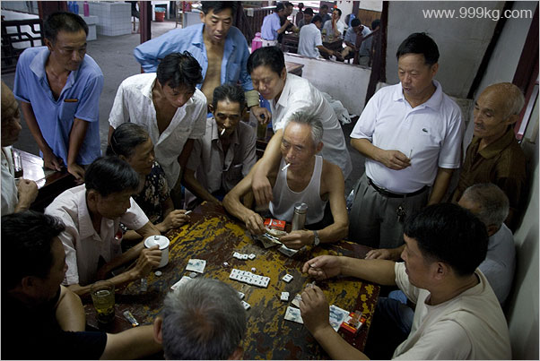

|
Zhu-jia-jiao, A
Shanghai Watertown Story
David Yang, August 2006
Watertown tour is a relatively
new idea in China tourism.
Before 1990 no people visit the so-called water towns, they
were just ordinary Jiang-nan (southern Yang-zi river) villages. As large scale urbanization begins,
old towns have
been fast giving way to factories and office buildings. By early
1990s people realize it was necessary to keep some of
them, at least for
the sake of tourism money.
There are a dozen of developed water towns in Jiang-su
and Zhe-jiang areas. Shanghai also has one, Zhu-jia-jiao. In Chinese,
Zhu-jia-jiao means the corner of Zhu families. It's located at the very
corner of Shanghai Qing-pu district, adjacent to Jiang-su province.
There is a direct bus service between Zhu-jia-jiao and the People's
Square, shanghai city centre. Bus fare is 9 Yuan (USD1.20), the journey
takes one and a half hours.

Zhu-jia-jiao sunset. Photo ID:
ZHJJ001.
Zhu-jia-jiao is a new name in China water-town
directory. During my 2-day stay, I found that beside the Fang-sheng-qiao
bridge (originally built in the Ming dynasty and rebuilt in
Jia-qing period, late Qing dynasty), there are no real historical things
left in town. Most of the old looking houses are built
or rebuilt recently. Large scale reconstruction is still
going on, I believe in the next few years, all Zhu-jia-jiao houses will
be in brand new concrete and steels, covered with old-looking tiles.
I am not saying
the reconstruction of endangered old houses is a bad thing. many houses of
Zhu-jia-jiao were built a few decades ago, not old enough to be
preserved as historical sites. If you are patient enough to wait for
100 years or more, any houses we build today will gain some historical
value. But if you are looking for
real ancient water town now, forget Zhu-jia-jiao.
Don't ask me where to go for
the real things today, I have been to many water towns in China, in my view
none really fits the name of ancient town. Li-jiang in Yun-nan province
is probably a good bet.

Zhu-jia-jiao old
houses. Photo ID:
ZHJJ002.
There are good news from Zhu-jia-jiao as well.
Comparing to other water towns, Zhu-jia-jiao is less crowded, the
streets are relatively quiet if you avoid weekends and Chinese golden
weeks. Plus, the local foods, especially Zha-rou and Zhong-zi, are cheap
and good, if you are not vegetarian.
As mentioned, Fang-sheng-qiao is well worth a visit.
Fang-sheng-qiao in Chinese means the bridge of freeing. There are many
local women try to sell you live fish along the
bridge. They say it would bring you luck and fortune if you free fish
by the bridge. I would love to have a try because I need money, but it
is the water quality that
stopped me. I was a little afraid the
fish would be killed if they were freed
in the dirty water. Freeing or
killing, that is a problem.
The streets of Zhu-jia-jiao is less crowded and
quiet, good for my style of street photography. But it was too quiet
that for the first time in 4 years I was forced venturing into low-night
photography, or I should call it no-light photography, because I was
literally shooting in the complete darkness. In a few night images the
stars are noticeable, as exposure time was set to 30 seconds or longer.

Cheng-huang Temple Bridge. Photo ID:
ZHJJ003. A 30s exposure.
In the dusk of my first day visit, I was hoping to
get a few good images with red-lanterns light up, the standard water
town shots. I scouted around and at 6pm spot a small bridge for night
shots. When the night completely falls, there was no one red lantern
ever lighted up. I desperately asked around, locals said there are too
few visitors in the weekdays, the lanterns only light up in the
weekends. Oh, no.

Red lanterns light up only on the
boat. Photo ID: ZHJJ004.
Zhu-jia-jiao is just a day tour for many. But I would
recommend to spent a night there, especially if your purpose is to take
good photos. Light condition is at its best late in the afternoon and
early in the morning. With most of tourists gone and locals
re-surface on the streets, it becomes a photography haven. I got over
300 shots in my 2-day visit.
There's a 2-storey tea house not far away from the
famous Fang-sheng-qiao that boasts itself the largest teahouse in
Jiang-nan. if you get up and reach there early (before 9am) you would be
surprised to see a morning gathering of hundreds of local people,
chatting, gambling, Chinese chess and Ma-jiang playing, or simply
enjoy a cup of tea, which costs only 1 Yuan (USD0.13). Amazing,
must go and see, then you will understand why the streets of Zhu-jia-jiao
is so quiet, because people are all in the teahouse.

Gambling, Zhu--jia-jiao teahouse.
Photo ID: ZHJJ005.
Please
click here for total 72 images of Zhu-jia-jiao
|